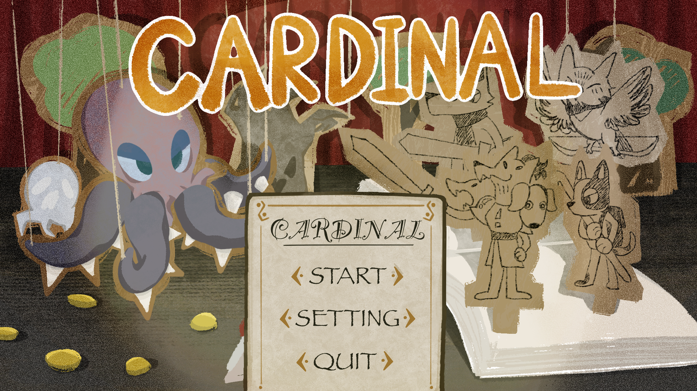
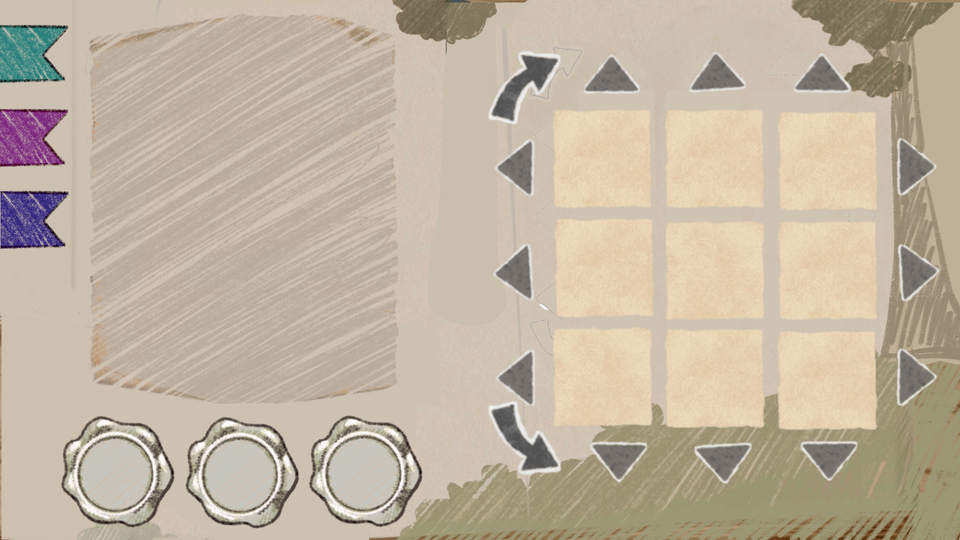

48 小时，围绕「位置」设计的一款放置式卡组构建游戏。我负责界面与手绘美术，把棋盘、卡牌和路线图画成同一张桌上的物件。
从棋盘到地图，翻看四种游戏场景。
拖开纸片，看下方的手绘组件。轻点可查看名称，也可以用方向键移动。
点选纸偶，查看它的循环动作。
两份战斗界面方案并排对照。

CARDINAL 是 Moray Game Jam 的团队项目。团队在 48 小时内围绕「位置」主题，探索放置玩法与肉鸽卡组构建相结合的游戏 DEMO。我负责界面与游戏美术设计。
项目把卡牌、棋盘、路线图、钱币和按钮设计成桌面上的手绘纸片。战斗、地图、事件与商店界面分别组织对手状态、路线选择、事件选项和商品信息。
我完成了 15 张卡牌和 3 个 Boss 的动画绘制。页面以 UI Mockup、角色动效和拆分组件展示设计成果；交互用于探索这些界面元素。